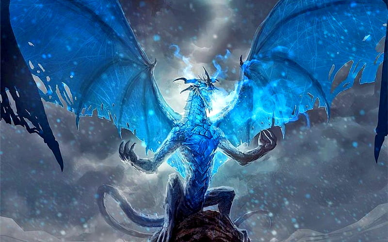

Kamininari

Ten thousand years ago, before man walked the earth, dragons ruled land, sky and sea. Growing tired of her rivlary with nearby dragons, the blue dragon, Arzagnirik created a race of dragons to protect her land. These creatures looked like dragons, but walked on two legs and were much smaller than Arzagnirik. This new race of Dragonborn created the ancient city of Kamininari.
The blue dragonborns have protected their city for thousands of years, even after the disappearence of Arzagnirik. It is said other blue dragons have taken her place, but none have remained for long. The blue dragonborn guard Arzagnirik's hoard and keep it as their own, destroying enemies who seek to take their birthright. They have not worshipped any dragon since the disappearence of Arzagnirik, including blue dragons.
Over many generations, the dragonborn lost their ability to fly as children were born wingless. It is incredibly rare to find a dragonborn with wings now. However, Nezzarred, our leader, has gained the ability to grow wings.
The chief of Kamininari, Nezzarred has lead us for 2 and a half decades. A powerful sorcerer, Nezzarred charged into battle against Shemetasammur's Red Dragonborn of Burterran when they attempted to invade Kamininari. During this battle, powerful dragon wings erupted from the back of Nezzarred, and he was able to take flight and rain lightning down on the unprepared red dragonborn.
Vorthaded, who lead the attack on Kamininari, was said to have never lost a battle before the invasion, and has not lost a battle since. Nezzarred allowed Vorthaded to live, as well as many of the men, due to Cerel's, wife of Vorthaded, unmatched diplomatic abilities.
Nezzarred currently has no wife nor children.